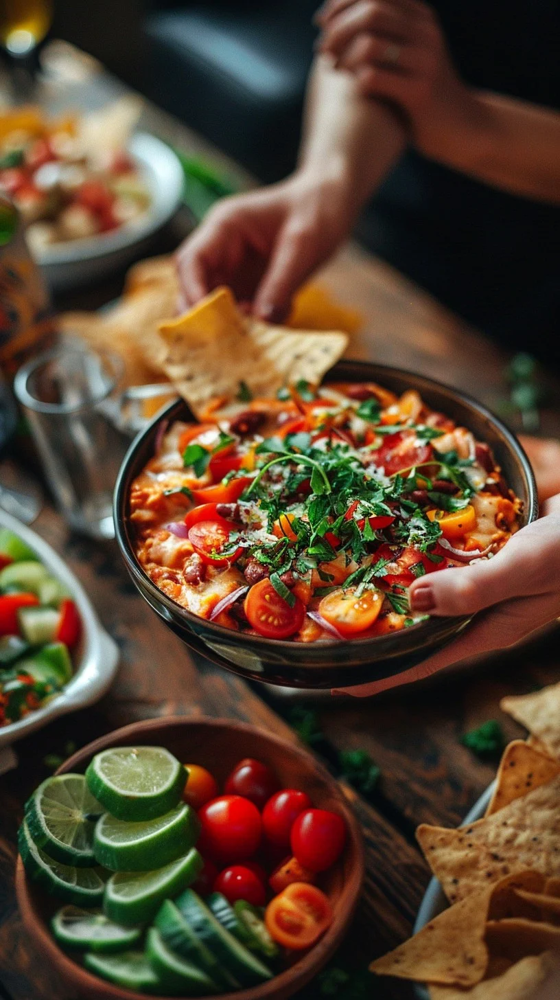

Zesty 4th of July Salsa

Credit and sourced by StockCake.
All you need for your own Zesty 4th of July Salsa
Ingredients:
- 12 ounce of jalapeno peppers
- 6 medium ripe tomatoes
- 2 bunches of green onions
- 3 medium white oinions
- 8 ounces of canned green chile peppers
- 1 bunch of fresh cilantro
- 2 medium limes juiced
- salt to taste
Steps:
- Finely chop tomatoes, green and white onions, chile peppers, and cilantro
- Drain jalapeno juice into large bowl
- Finely chop jalapenos and add to large bowl
- Add chopped tomatoes, green/white onions, chile peppers, and cilantro to large bowl
- Juice and add limes to large bowl
- Mix thoroughly and season with salt to taste